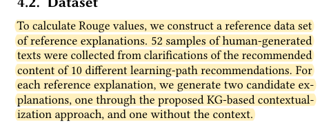
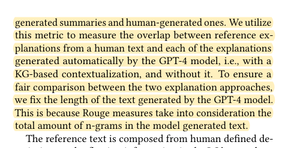
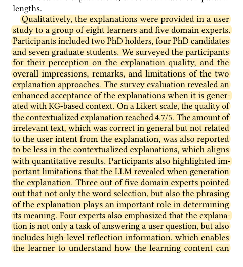

R27 · IEEE education study methods
Compare the same tasks with and without graph context, then study experience separately
Knowledge Graphs as Context Sources for LLM-Based Explanations of Learning Recommendations
Hasan Abu-Rasheed, Christian Weber, Madjid Fathi · 2024
IEEE EDUCON 2024; reviewed version: public author manuscript arXiv:2403.03008v1, 6 pages; conference version: 5 pages
What the study investigates
An LLM may produce fluent explanations of learning recommendations that do not reflect the learner's actual goals. The study tests whether knowledge-graph context improves those explanations.
How it was studied
Sections 4.1–4.3 use 52 human reference explanations from ten learning paths. The same GPT-4 model generates an explanation with and without graph context for each reference, controlling output length. Evaluation uses ROUGE, with additional feedback from eight learners and five domain experts.
Findings
Graph-context explanations perform better on text-overlap metrics and user evaluations. The comparison isolates the presence of context; it does not remove each graph relation in turn.
Limits of the evidence
The 52 explanations are nested in ten paths, not produced by 52 independent student participants. The authors acknowledge the limited sample and do not supply a fully reproducible power justification. ROUGE measures wording overlap, not pharmacy facts, prompt consequences, or learner attribution. The reviewed complete author manuscript has different physical page numbers from the conference layout.
How it informs DualGraph-OSCE
The same-input, same-model pairing is useful, but our baseline retains the existing platform's full information and control capabilities. Faculty verify defined role and assessment decisions instead of text overlap. Planned live consultations are separate from the technical benchmark; a larger input count alone does not establish stronger evidence.
Where to cite it
Evaluation: fixed inputs, models, and knowledge conditions. Related work: graph context versus executable rule graphs.
Possible manuscript wording
An EDUCON study compares graph context on matched reference tasks and separates technical measurement from user feedback. Our paired design instead uses faculty-verified role and assessment decisions.
[R27·1]This is a manuscript-specific paraphrase, not a quotation from the source. The excerpts below define what the citation supports. The proposed method and its expected benefits are not findings of the cited paper.
Source passages and precise locations
Page numbers refer to physical pages in the saved original PDF, including any repository cover sheets. Compilation page numbers are listed separately. Yellow highlighting marks the passage used for the argument.
R27-E1Fifty-two reference explanations and paired generation
Original PDF page 4. Highlight compilation page 403. The highlight identifies the passage used here; consult the full original page for its context.

R27-E2Control of generation length
Original PDF page 4. Highlight compilation page 403. The highlight identifies the passage used here; consult the full original page for its context.

R27-E3Eight learners, five experts, and the questionnaire
Original PDF page 4. Highlight compilation page 403. The highlight identifies the passage used here; consult the full original page for its context.
